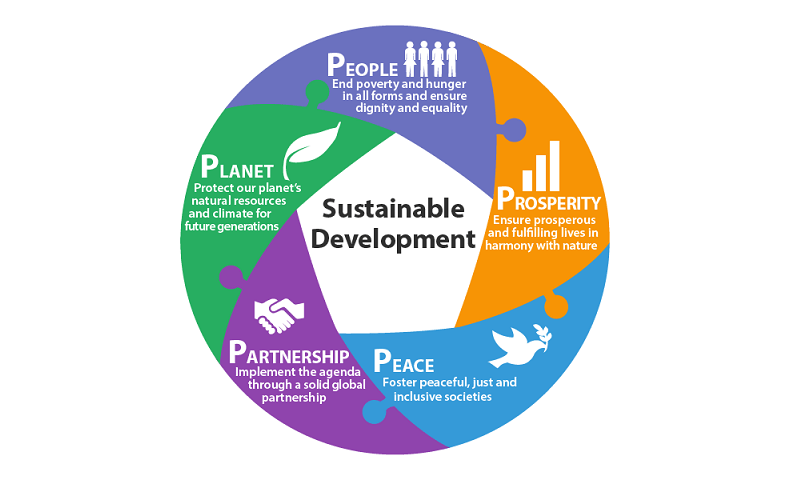

Our Mission
We strive to create a sustainable future for our students and the environment.
Why Do We Need to Be Sustainable?
Sustainability is crucial for preserving our planet for future generations. It helps reduce pollution, conserve resources, and promote a healthier environment for all living beings.
How Are We Doing It?
- Implementing solar panels to reduce energy consumption.
- Creating a robust recycling program to minimize waste.
- Encouraging walking, biking, and carpooling among students and staff.
- Incorporating sustainability into our curriculum to educate students.
When Are We Doing It?
Our sustainability initiatives are ongoing, with specific goals set for:
- 2023: Installation of solar panels and starting recycling programs.
- 2024: Full implementation of sustainable transportation options.
- 2025: Review and assess the impact of our sustainability efforts.